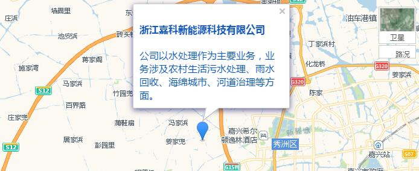

浙江嘉科新能源科技有限公司（嘉科新能源）是中国电子科技集团公司（中国电科）第三十六研究所（三十六所）全资子公司，注册资金3000万，是国家高新技术企业。
中国电科是中央直接管理的十大军工集团之一，三十六所是我国从事通信电子技术的国家一类研究所，拥有国内先进的科研设施、设计开发手段和测试仪器及加工设备，建有CAD中心、仿真实验室、计量站等，建有博士后工作站、国防科技重点实验室及院士1名，取得国家、部、省等各类科研成果奖400多项，并拥有ISO9001质量认证体系，GB/T28001-2001职业健康安全管理体系，GB/T14001-2004环境管理体系等。
嘉科新能源以水处理作为主要业务，业务涉及农村生活污水处理、雨水回收、海绵城市、河道治理等方面。公司注重产品研发和技术创新，研发人员占公司总人数30%，拥有专利46项，软件著作权5项，发表论文20多篇；公司拥有专业的水处理研发团队，拥有水污染治理的设计、总承包、运维等资质，建有省级重点企业研究院（浙江省光伏装备与智能控制研究院），浙江省重点科技创新团队、嘉兴重点科技创新团队，与浙江大学、浙江水利水电学院等高校、及中国电科各兄弟单位等保持良好的合作关系。公司提供农村生活污水处理核心设备及系统解决方案、雨水回收核心设备和系统解决方案、海绵城市整体解决方案、河道治理解决方案，开发了太阳能农村生活污水处理系统、市电农村生活污水处理系统、雨水回收系统、一体化泵站和雨水控制设备、污水处理一体化设备等产品，产品在浙江、江苏、安徽等地进行应用，性能良好，处于国内领先水平。
嘉科新能源以“绿色、智能、高效、环保”为发展理念，以中央企业社会责任感为己任，通过“科技创造价值、品质服务人类”，严格秉承军工人的优良作风，为客户提供可靠、稳定、高质量的产品及优质服务，帮客户创造更多的价值！

地址：浙江省嘉兴市秀洲区桃园路587号中电科（嘉兴）智慧产业园4号楼
联系人：郁先生
电话：0573-82651761
传真：0573-82651223
邮箱：yudf@cetcsolar.com